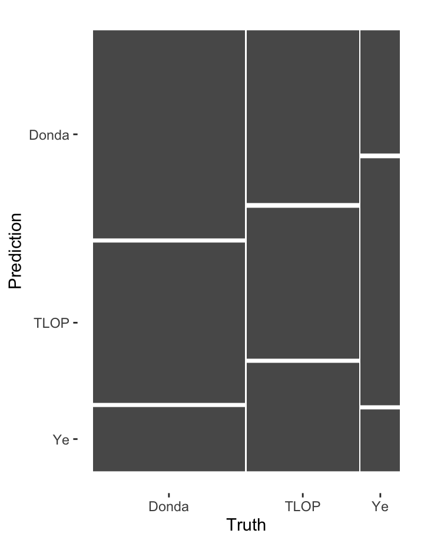
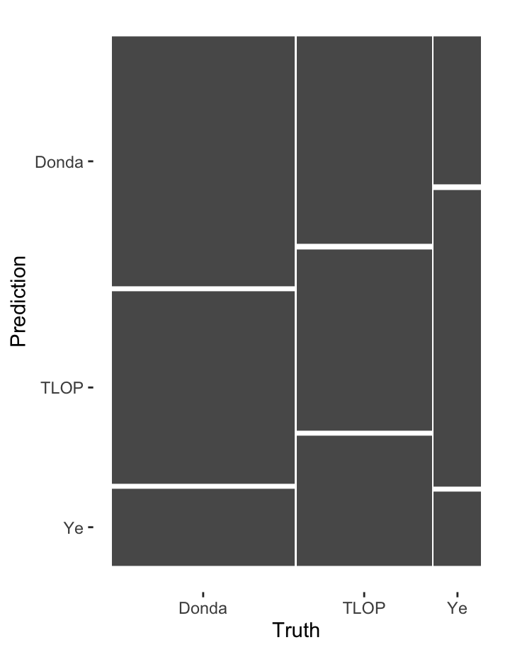

Introduction
For my corpus I will be looking at the 7 (solo) studio albums by Kanye West that he created after the death of his mother. Online there is often a theory that these albums correspond with the stages of grief. During this assignment I would like to check if these albums indeed follow this pattern.
- Shock (808’s and Heartbreak)
- Denial (My Beautiful Dark Twisted Fantasy)
- Anger (Yeezus)
- Bargaining (The Life of Pablo or TLOP)
- Depression (Ye)
- Testing (JESUS IS KING)
- Acceptance (DONDA)
In this project I will be analyzing these albums using the information that the spotify API provides such as valence, tempo and speechiness. These variables will be used to analyse if these albums can be categorized as having unique features that correspond to the stages of grief.
The corpus consists of exactly 100 songs. Which knowing Ye is not an accident. The corpus has a large variety of songs and feelings across the different albums. The difficulty in this corpus is if the albums are truly unique or if the diversity of features in songs per album are too large to distinguish.
Some songs that stand out in this corpus are Power from the album Denial which comes from the album My Beautiful Dark Twisted Fantasy. Which comes off as quite a angry song as well. Issues could also stem from the fact that Ye has consistently made changes to his albums. One example of this is for TLOP in which he changed multiple segments in songs as well as completely adding a new song Saint Pablo to the album. However the issue is that spotify only has the most recent version of his album. Therefore it is difficult to recognize if the changes he has made on a single album also reflect the changes in his process.
Global Overview of All Albums
This graph gives a global analysis of the overall atmosphere of the music of the 7 Studio Albums that Kanye West released after his mothers death.
According to the Spotify API, Energy is a measure from 0.0 to 1.0 and represents a perceptual measure of intensity and activity. Typically, energetic tracks feel fast, loud, and noisy.
Valence is a measure from 0.0 to 1.0 describing the musical positiveness conveyed by a track. Tracks with high valence sound more positive (e.g. happy, cheerful, euphoric), while tracks with low valence sound more negative (e.g. sad, depressed, angry).
The interesting thing we see at first glance is that there is quite an even distribution between the different albums. They are not specifically as select into their specific segments as we might have thought. However on closer inspection you can see that there are clear differences between certain albums. For example Yeezus which we would associate with anger has most of it’s song in the Turbulent/Angry section. Similar case for MBDTF. However Donda has a very diverse spectrum being in three different segments and not having real clustering. However it could also be that due to the style of Kanye West’s music largely being Hip Hop these songs are often seen as being in the Angry due to being higher in energy and lower in valance resulting in this clustering.
Analysis of Given methods


The Differences in Valance and Energy over Time
When we take a look at the individual albums more clearly it becomes clear that there are distinct differences but it is quite difficult to digest from this information if this is indeed caused by the stages of grief or if these are more based on the individual tracks and semantics in each. The Albums all cover a large variety of the spectrum. However we do see clear examples of the Album Ye where the Valance of most songs is much lower then an album such as TLOP which we would associate with bargaining and having a large spectrum of different energies and valances. Therefore the hypothesis about the different stages of grief appear to have some truth in the fact that we see differences between different albums which correspond to differences in energy and valance.
Section 4
Section 4
Section 5
Section 5
Section 6
Section 6
Section 7
Section 7